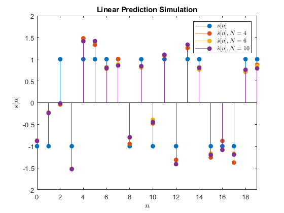

FIR MMSE
Dan Brody, I-An Huang, Nikita Teplitskiy
Contents
Find and implement FIR Filters
clc clear variables close all M = 1e6; var = 0.1; c = [1 0.2 0.4];
find FIR Filters
h4 = get_filter(c, var, 4).'; h6 = get_filter(c, var, 6).'; h10 = get_filter(c, var, 10).';
generate inputs
s = randi(2, 1, M).*2 - 3; d = randn(1, M).*sqrt(var);
simulate inputs
s_hat4 = simulate(s, d, c, h4, M); s_hat6 = simulate(s, d, c, h6, M); s_hat10 = simulate(s, d, c, h10, M);
calculate and plot MSE
MSE = @(s, s_hat) mean((s - s_hat).^2); mse4 = MSE(s, s_hat4); mse6 = MSE(s, s_hat6); mse10 = MSE(s, s_hat10); disp(table(mse4, mse6, mse10))
mse4 mse6 mse10
_______ _______ _______
0.11476 0.10712 0.10635
Sanity Check
M = 20; % generate inputs s = randi(2, 1, M).*2 - 3; d = randn(1, M).*sqrt(var); % simulate inputs s_hat4 = simulate(s, d, c, h4, M); s_hat6 = simulate(s, d, c, h6, M); s_hat10 = simulate(s, d, c, h10, M); stem(0:(M-1), [s; s_hat4; s_hat6; s_hat10].', 'filled') ylabel('$s[n]$', 'Interpreter', 'latex') xlabel('$n$', 'Interpreter', 'latex') axis([-inf inf -2 2]) title('Linear Prediction Simulation'); legend({'$s[n]$','$\hat{s}[n], N = 4$', ... '$\hat{s}[n], N = 6$','$\hat{s}[n], N = 10$'}, ... 'Interpreter', 'latex');
Function: Find FIR Filter
c: input filter var: noise power N: length of FIR filter
function h = get_filter(c, var, N) % find autocorrelation vector r r = conv(c, flip(c)); r((length(r) + 1)/2) = r((length(r) + 1)/2) + var; % generate autocorrelation matrix Rrr ex_size = N*2 - 1; ex_r = zeros(1, ex_size); ex_r((ex_size - length(r))/2 + 1:(ex_size - length(r))/2 + length(r)) ... = r; ex_R = toeplitz(ex_r); Rrr = ex_R(1:N, N:end); % generate cross-correlation matrix Rsr Rsr = zeros(N, 1); Rsr(1) = 1; h = Rrr \ Rsr; end
Function: Simulation
function s_hat = simulate(s, d, c, h, M) r = conv(c, s); r = r(1:M); r = r + d; s_hat = conv(h, r); s_hat = s_hat(1:M); end